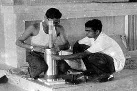
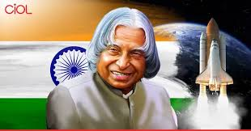
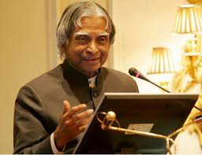

Dr. A.P.J. Abdul Kalam
The People's President | The Missile Man of India
Who Was He?
Dr. Avul Pakir Jainulabdeen Abdul Kalam was one of India’s most beloved scientists, educators, and Presidents. He inspired generations with his vision, simplicity, and dedication. Born in a humble family, he rose through hard work and dedication to become the President of India and an icon of scientific progress and youth empowerment.
Admirable Qualities
- Visionary Leader: He dreamt of a developed India and motivated youth to dream big.
- Humble and Grounded: Despite global fame, he lived a simple life and always stayed connected to the people.
- Passionate Teacher: He loved interacting with students and encouraged innovation and learning.
- Scientific Genius: Key contributor to India’s missile and nuclear programs.
- True Patriot: Dedicated his life to serving the nation, even after his presidency.
Moments Through Time



In His Words
“Dream, dream, dream. Dreams transform into thoughts and thoughts result in action.”